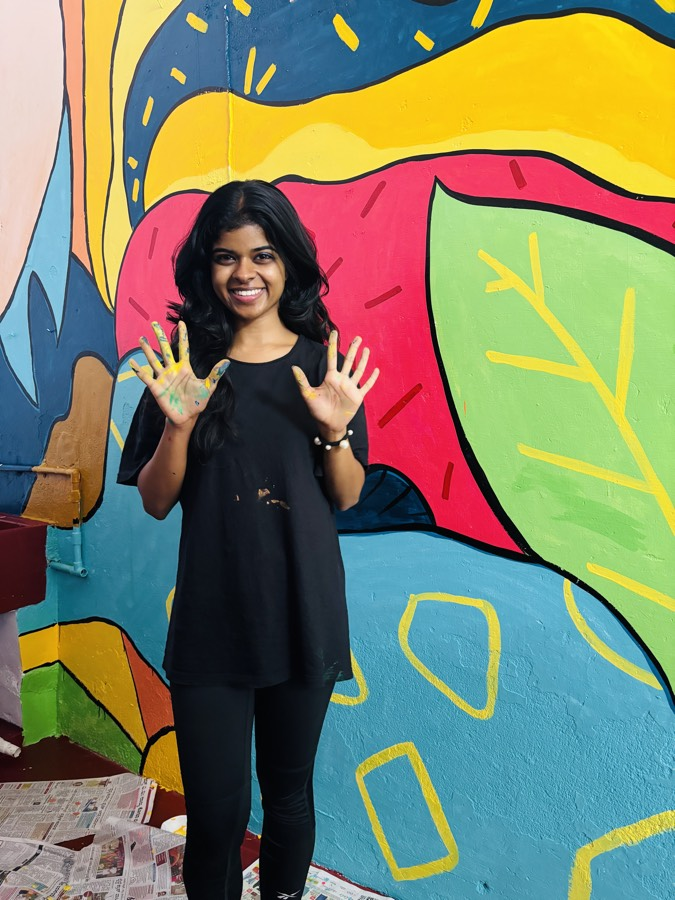
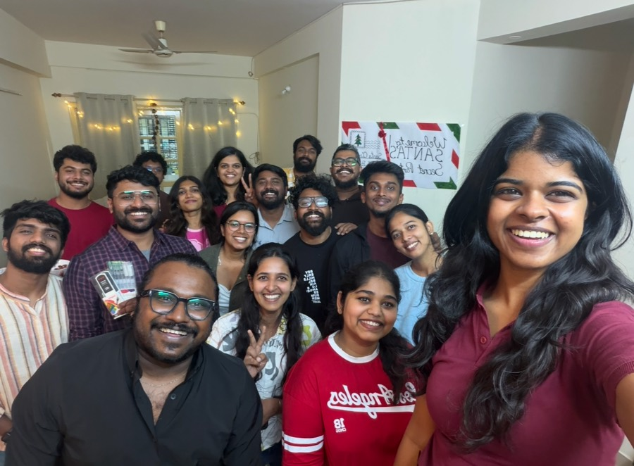
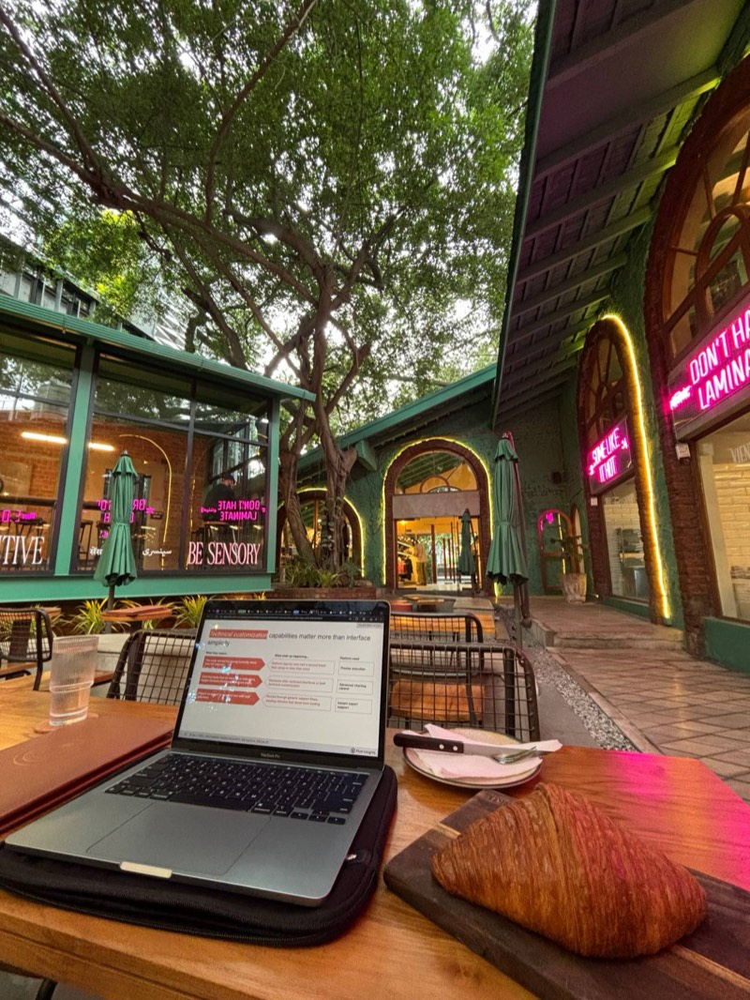
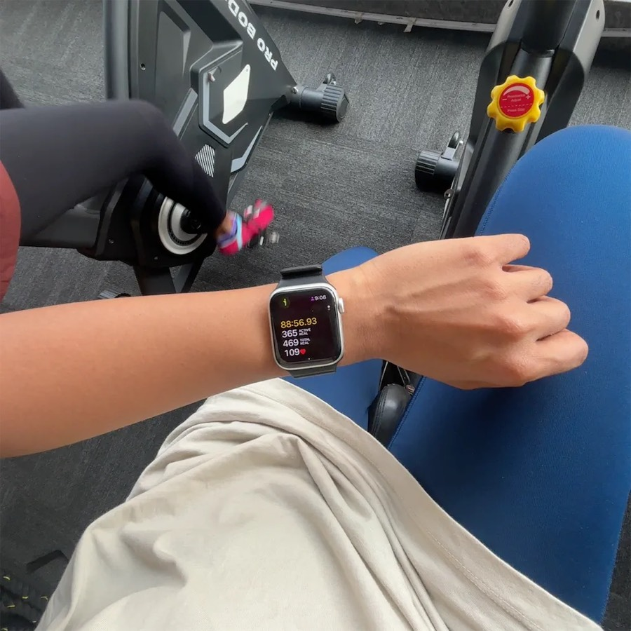
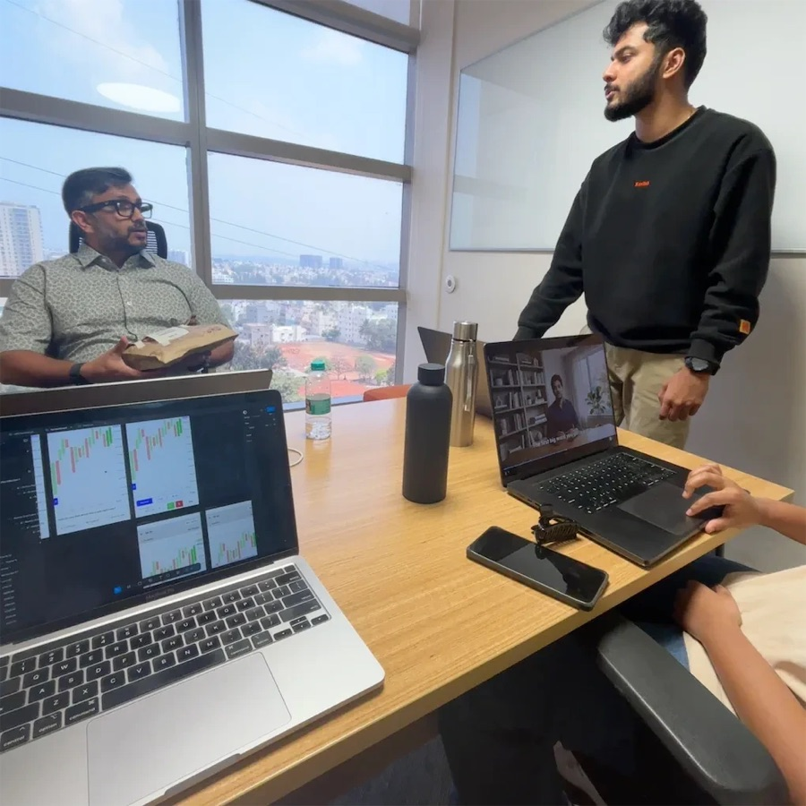

Contents
Seven stories, one notebook.
Pick a story to turn straight to it, or flip through them in order.
Senior UX Designer
Hi, I’m Nikita! I love a good UX puzzle, and for 5 years I’ve untangled tricky flows so users reach their goal without a second thought.


Work
Pick a story to turn straight to it, or flip through them in order.
Where first-time traders learn, practise and face the market before real money does.
Read the overviewAdvice that explains itself, stays optional and moves at your pace.
Read the overviewOne view to watch, control and exit every position, on any screen.
Read the storyTurning a minimal brokerage challenge into a daily scorecard that shows profit, loss, and rewards at a glance.
Read the storyA wedding gift of ETFs to about 300 guests made the news. I turned it into a three-step way to gift stocks on FYERS.
Read the storyIf you have a messy story of your own, I’d love to hear it.
Let’s talkThanks for reading.
Kind words
Nikita is one of those rare people who brings clarity wherever she goes. Give her an ambiguous problem, a loosely structured conversation, or a room full of conflicting ideas, and she’ll find a way to make sense of it all.
Most people fill the gaps with assumptions. Nikki fills them with questions, and then she comes back with a plan.
She has a real talent for spotting edge cases that others miss, which made our work far more robust.
With very little time to get familiar with the new workflow, she managed to find her footing quickly, going from designing interfaces to building and debugging an entire application.
She makes space for everyone’s voice, notices when someone has been unintentionally left out, and makes a conscious effort to bring them into the conversation.
She’s not just a designer; she has a way of thinking that makes her different from others, and I genuinely believe the industry is yet to see the full extent of her talent.
Read all 11 recommendations on LinkedIn (opens in a new tab)
How I work
Good UX starts with questions. I like sitting with messy problems long enough to understand what can be removed, what must stay, and what needs to become clearer.
Before pixels, I want to understand what people are trying to decide, what makes them hesitate, and where trust breaks.
I turn notes and findings into journeys, then go looking for where they break — the edge cases, empty states, and moments of doubt.
Simplicity is the hard part. I strip flows back to what helps people decide, then design the details that make it feel trustworthy.
The work isn’t done at handoff. I stay close to engineering, and close to what real users do once it’s live.
Welcome to my space!
Paint on the palette, or on my sleeves. Either way, the plans get made, the workouts get done, and the best ideas arrive over a croissant.
– Nikita

A library wall for a children’s home
Secret Santa, organised for the team
Designing out of the office
Showing up on the slow days
Talking through ideas with the teamIn my free time
Say hello
I’d love to help make it make sense. Tell me what you’re working on and I’ll write back.